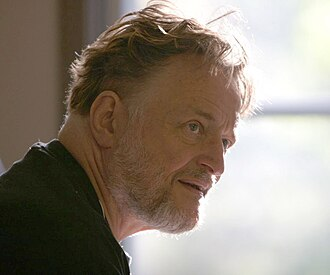

1937–2020
British
Game theory, algebra, number theory, geometry, recreational mathematics
John Horton Conway was born in Liverpool and studied at Cambridge, where he remained for most of his career before moving to Princeton in 1987. His mathematical range was astonishing: he made fundamental contributions to group theory, number theory, topology, geometry, combinatorial game theory, and coding theory, while simultaneously becoming the world's most prominent recreational mathematician.
His 1976 book On Numbers and Games extended the Sprague–Grundy framework far beyond impartial games, creating a full algebraic theory of combinatorial games. In the process he discovered the surreal numbers — a number system that includes both the real numbers and transfinite ordinals, built recursively from games. The construction is breathtaking in its elegance: numbers and games are defined by the same recursive structure, with numbers being the "well-behaved" special case.
Conway's collaborative work with Elwyn Berlekamp and Richard Guy, published as Winning Ways for Your Mathematical Plays (1982), became the definitive reference in combinatorial game theory. But his fame extended far beyond specialists: the Game of Life, invented in 1970, captivated generations of computer enthusiasts and became a standard example in the study of complexity and emergent behaviour. Conway died of COVID-19 in April 2020, aged 82.
| Phase | Page | Referenced for |
|---|---|---|
| Phase 15 | Combinatorial Games | Berlekamp, Conway, and Guy's Winning Ways (1982) |
| Phase 15 | Combinatorial Games | On Numbers and Games (1976) and surreal numbers |